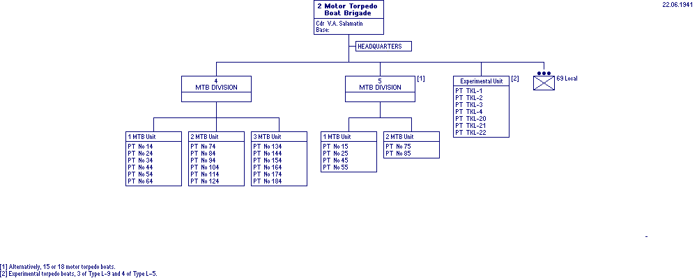

World War II Armed Forces — Orders of Battle and Organizations
Last Updated 19.12.2015
Soviet Navy
In Cooperation with Marek Suplat
2nd Motor Torpedo Boat Brigade
, Kronstadt Naval Area, Baltic Fleet
22 June 1941
